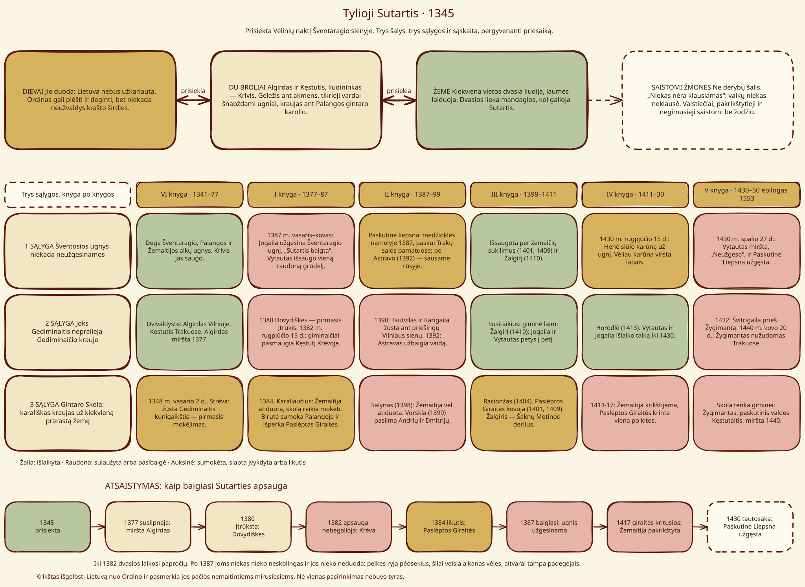
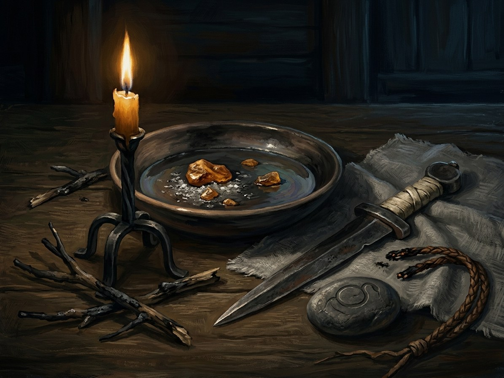

Tylioji Sutartis (Silent Pact)¶
The Pact at a glance¶


Tylioji Sutartis: šalys, sąlygos ir Atsaistymas¶
Tylioji Sutartis (Silent Pact)

Tylioji Sutartis (Silent Pact) · pact¶
Tipas |
pact |
Metai |
1345–1387 |
Pastaba |
Tylioji Sutartis: the pact of 1345 between Gediminid brothers and the sacred fire; series engine. |
Terms¶
[The saga’s invention], sworn on Vėlinės night, 1345, in the Šventaragis valley, when Algirdas and Kęstutis overthrew their brother Jaunutis and divided the realm (Book VI ch. 4, the oath). The gods give: Lithuania will not be conquered; the Order may raid and burn but never hold the heartland. The princes give: (1) the sacred flames (Šventaragis, Palanga, the Samogitian alkai) are never extinguished; (2) no Gediminid sheds Gediminid blood; (3) the Amber Debt: royal blood for every land lost to plough and cross. Historical anchor: the Grand Duchy remained the last unconquered pagan state in Europe, under constant crusade, until 1387; the Pact is the saga’s reason why.
Parties & witnesses¶
Binds: Algirdas, Kęstutis, the pagan clergy and the Gediminid line. The Krivis is no envoy but a witness: „the gods will not bargain with you, and give nothing for free“. Rite: iron laid on a stone; each prince whispers his secret name to the fire; blood on a Palanga amber bead („the sea will witness“); each states what he gives. Witnesses: every spirit of place (laumės stand surety), which is why the dvasios are courteous. Its quiet nature is the line „Niekas nėra klausiamas“: no one asked the children.
Breaches¶
Year |
State |
Why |
|---|---|---|
1377 |
weakened |
Algirdas dies |
1380 |
cracked |
Dovydiškės: Jogaila plots against Kęstutis |
1382 |
protection lapsed |
Clause 2: Kęstutis killed by kin at Krėva (15 Aug; Book I ch. 9) |
1384 |
remnant |
Birutė’s sacrifice buys the Hidden Groves |
1387 |
ended |
Clause 1: Jogaila puts out the Šventaragis flame (Długosz), fells the grove, kills the snakes (the baptism) |
1413–17 |
groves fall |
Samogitia baptised |
1430 |
folklore |
the Last Flame goes out |
Consequences¶
The Unbinding (Atsaistymas): spirits that were owed courtesy are no longer owed or giving it. Samogitia’s swamps eat trackers; groves breed ravenous vėlės; aitvarai turn arsonists; laumės who swapped babies now drown them. Priests cannot see them and holy water means nothing to them. The baptism saves Lithuania from the Order and damns it to its own unfed dead. Costs fall on the line: kin-blood for land lost.
Ryšiai
Binds: Algirdas · Gediminaičiai (House of Gediminas) (1345–1387) · Kęstutis · Pagan clergy (Krivis, žyniai, vaidilutės)
Broken by: Kęstutis strangled at Krėva — Clause 2: Gediminid blood.
Caused by: Silent Pact sworn
Ended by: Baptism of Lithuania; Šventaragis flame put out — Clause 1: flames extinguished.
Surety: Laumės (weavers by the water) — The Pact’s direct witnesses.
- School
- Pact between two princes, the gods and the spirits of place. The saga's invention
- Tier
- Binds Algirdas, Kęstutis and the Gediminid line. The Krivis (tier 4) is witness, not envoy
- Casting
- Sworn on Vėlinės night 1345 in the Šventaragis valley: iron laid on a stone, each prince whispers his secret name to the fire, blood on a Palanga amber bead, each states what he gives
- Components
- A sacred flame, the Krivis, amber, blood, the princes' true names. Witnesses: every spirit of place, laumės as surety
- Cost
- The Amber Debt: royal blood for every land lost to the plough and cross. No one asked the children
- Duration
- 1345 to 1387 formally; a remnant (the Hidden Groves) to 1417; folklore from 1430
- Limits
- A treaty between the land's people and the land's spirits, not a god's grace. The gods hold a baptised land only by custom
- Counters
- Kin-slaying; extinguishing the flames; baptism
The gods give. Lithuania will not be conquered. The Order may raid and burn but never hold the heartland.
The princes give. The sacred flames are never extinguished; no Gediminid sheds Gediminid blood; the Amber Debt.
The spirits. The Pact keeps the dvasios courteous.
Birutė's sacrifice. At Palanga in 1384 she pays the debt partially and buys the Hidden Groves, a remnant protection over Samogitia and the deep Dykra.
Clause 2, 1382. Kęstutis is murdered by kin at Krėva: the gods' protection lapses.
Clause 1, 1387. Jogaila puts out the Šventaragis flame, fells the grove and has the sacred snakes killed. The Pact formally ends, and the Unbinding begins.
The tail. Samogitia is baptised 1413-17 and the groves fall. Vytautas dies in 1430 and the last flame goes out.
State over time¶
Year |
State |
Why |
|---|---|---|
1345 |
sworn |
|
1377 |
weakened |
Algirdas dies |
1380 |
cracked |
Dovydiškės |
1382 |
protection_lapsed |
Kęstutis murdered by kin |
1384 |
remnant_hidden_groves |
Birutė pays the Amber Debt |
1387 |
ended |
Šventaragis flame extinguished |
1417 |
groves_fallen |
Samogitia baptised |
1430 |
folklore |
Last Flame out |
Sąsajos¶
graph LR
algirdas["Algirdas"]
ev_kestutis_death["Kęstutis strangled at Krėva"]
ev_lithuania_baptism["Baptism of Lithuania; Šventaragis flame put out"]
ev_pact_sworn["Silent Pact sworn"]
gediminaiciai["Gediminaičiai (House of Gediminas)"]
kestutis["Kęstutis"]
laumes["Laumės (weavers by the water)"]
pagan_clergy["Pagan clergy (Krivis, žyniai, vaidilutės)"]
silent_pact["Tylioji Sutartis (Silent Pact)"]
silent_pact -->|Binds| algirdas
silent_pact -->|Binds| kestutis
silent_pact -->|Binds| pagan_clergy
silent_pact -->|Binds| gediminaiciai
ev_pact_sworn -->|Causes| silent_pact
ev_kestutis_death -->|Breaks| silent_pact
ev_lithuania_baptism -->|Ends| silent_pact
laumes -->|Surety for| silent_pact
style silent_pact stroke-width:3px